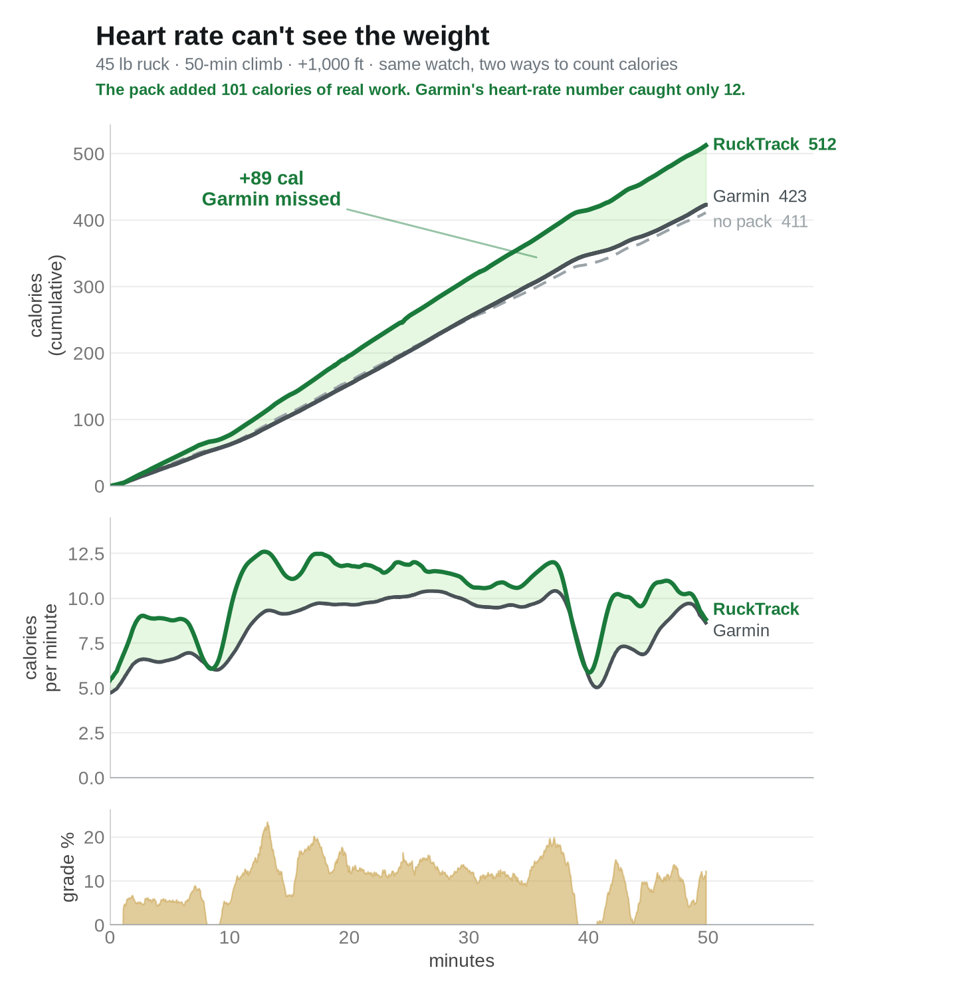
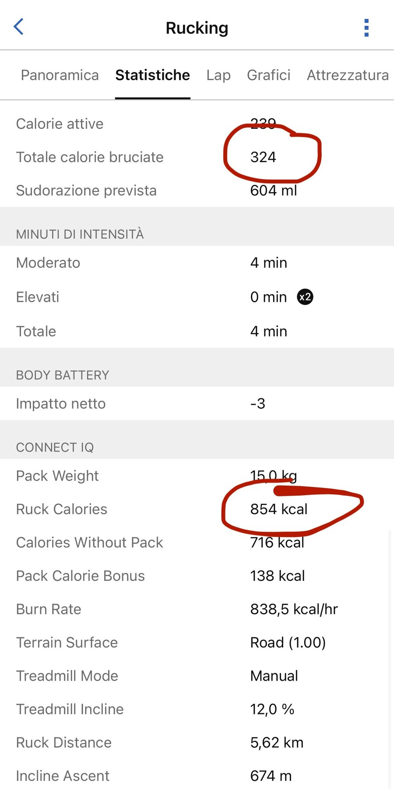

The two-walk test that shows what heart-rate calorie models miss, and the 1977 Army equation that fixes it.
Walk your usual loop with your pack loaded. Save it, open Garmin Connect, and note the Total Calories. A day or two later, walk the same loop at the same pace with the pack empty. Compare the two numbers.
They will be nearly identical.
I ran exactly this test on July 1st: same route, same pace, once with 45 lb and once with an empty pack. Garmin's calorie rate came back at 321 kcal per hour loaded and 323 kcal per hour unloaded. Forty-five pounds on my back changed the watch's answer by less than one percent.
Your legs know those two walks were not the same. Here's why heart rate doesn't.
That number comes from a heart-rate model. It is good at what it was built for: steady, unloaded cardio, where heart rate tracks effort closely.
Load breaks the assumption. Carrying weight raises your heart rate a little, but nowhere near in proportion to the extra mechanical work, and the fitter you are, the less it rises. Heart rate can't see weight, only strain.
A few of the newest watches (fēnix 8, Forerunner 970, tactix 8) have a built-in Rucking activity that does ask for your pack weight, and Garmin says it makes calorie burn more accurate. My test above was run on a Forerunner 965, which has no such activity and no place to enter a pack weight, so it tells you nothing either way about those three watches. I have not tested one. If you own one and have run the loaded-versus-empty comparison, I would genuinely like to know what you got.
Estimating the energy cost of loaded walking is an old, well-studied military problem. In 1977, researchers at the U.S. Army Research Institute of Environmental Medicine published the Pandolf equation, built from measured oxygen consumption of soldiers under load. It computes metabolic cost from exactly the things heart rate can't see: your body weight, the load, your speed, the grade, and the surface.
In plain English, the equation adds up three costs: the cost of standing there (scales with body weight), the cost of carrying the load itself (grows with the square of the load-to-body ratio, which is why heavy packs punish disproportionately), and the cost of moving (speed squared, plus a speed-times-grade term for climbing, all multiplied by a terrain factor from Soule and Goldman's research: pavement 1.0, gravel 1.05, trail 1.2, sand 1.5, snow 2.5). A later correction by Santee handles descents, where the simple equation underestimates.
Worked example, my body weight (165 lb) at 3 mph on a 10% trail grade: unloaded, the equation gives 667 kcal/hr. With 45 lb it gives 835 kcal/hr. The pack adds 168 kcal/hr. That's the work heart rate barely registers. The full equation, term by term, is on the calorie math page.
Honest answer: it depends on load and terrain, and light loads on flat ground are genuinely small. All numbers below are from the equation above (165 lb body, 3 mph); you can reproduce every row in the calculator.
| Scenario | Unloaded | Loaded | Pack bonus |
|---|---|---|---|
| 20 lb, flat road | 270 kcal/hr | 293 | +23 (+9%) |
| 20 lb, 5% trail | 486 | 535 | +49 (+10%) |
| 35 lb, flat road | 270 | 314 | +44 (+16%) |
| 35 lb, 5% trail | 486 | 575 | +90 (+18%) |
| 45 lb, 5% trail | 486 | 604 | +118 (+24%) |
| 45 lb, 10% trail | 667 | 835 | +168 (+25%) |
So: a 20 lb vest on pavement is a roughly 9% effect. A 45 lb ruck on a steep trail is a roughly 25% effect, and it keeps growing with weight and grade. If someone quotes you one flat percentage, they're hand-waving.
I carried 45 lb up a local hill: 50 minutes, about 1,000 ft of climbing. My watch recorded two calorie counts at once: Garmin's standard heart-rate number, and RuckTrack's load-aware count, with the model's no-pack baseline alongside.

Three things worth seeing in that picture. First, the pack added 101 calories of real work over the climb (RuckTrack loaded vs the same model unloaded). Garmin's heart-rate number moved 12 calories above the no-pack baseline: it caught about a tenth of the pack. Second, the middle panel shows where the gap opens: every steep pitch pushes the real burn rate up while the heart-rate estimate barely moves, and on the one flat stretch near minute 40 the two lines converge again. The gap is the grade times the load, exactly as the equation says. Third, and this is the part I'd check if I were you: Garmin's total (423) and RuckTrack's own no-pack estimate (411) agree within 3%. Two completely different methods, heart rate and work-based math, give the same answer for the walk itself. They only disagree about the pack. That's what tells you the difference is the load, not a model with its thumb on the scale.
It's not just my watch. A RuckTrack user in Italy sent me this after an hour on a treadmill at 12% incline carrying a 15 kg (33 lb) pack, about 2,200 ft of simulated climb. Garmin's total: 324 calories. It scored the entire hour as four minutes of moderate intensity, because his heart rate barely rose. RuckTrack counted 854, with the pack's share, 138 calories, stated separately. For that workload, the standard exercise-physiology treadmill equation (ACSM) lands within a few percent of RuckTrack's number.

A week later he sent a bigger one: two hours at 12% incline with the same pack, about 4,400 ft of simulated climb. Garmin counted 620 calories and labeled the whole session "Recovery." The work-based count: 1,700, and the standard treadmill equation lands within one percent of it.
RuckTrack runs the Pandolf equation live, once per second, using GPS speed, barometric grade, your profile body weight, the pack weight you set, and a terrain you pick. It integrates the result into a running total, and it computes the unloaded version in parallel, so at the end you get a Pack Calorie Bonus: the calories that were the pack's fault, stated separately instead of buried in one number. When you stop moving or slow below walking pace, it falls back to the watch's own heart-rate estimate so breaks still count. Everything is saved into the activity: six fields under Stats → Connect IQ in Garmin Connect, plus a per-second metabolic rate chart.
A few honest limits. The equation is validated for walking, so RuckTrack caps the speed input at 2.5 m/s; it is not a running model. It needs your real body weight from your Garmin profile, so set it. On steep descents the model floors at standing cost, which means downhill with a load it reads lower than Garmin's number, not higher. And Garmin does not let third-party apps replace the headline calorie number at the top of an activity, so Garmin's estimate stays on top and RuckTrack's numbers live in the Connect IQ section below it. One more: on flat, unloaded ground the two approaches roughly agree, as they should. This model earns its keep when you add weight and grade, and the table above is the honest size of that effect.
The full equation, terms, and references are on the calorie math page. The calculator runs the exact code the watch runs; put in your numbers and check mine. And if you want the second-by-second version on your own wrist, RuckTrack is on the Connect IQ store.